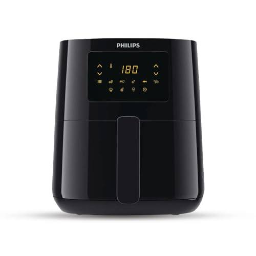
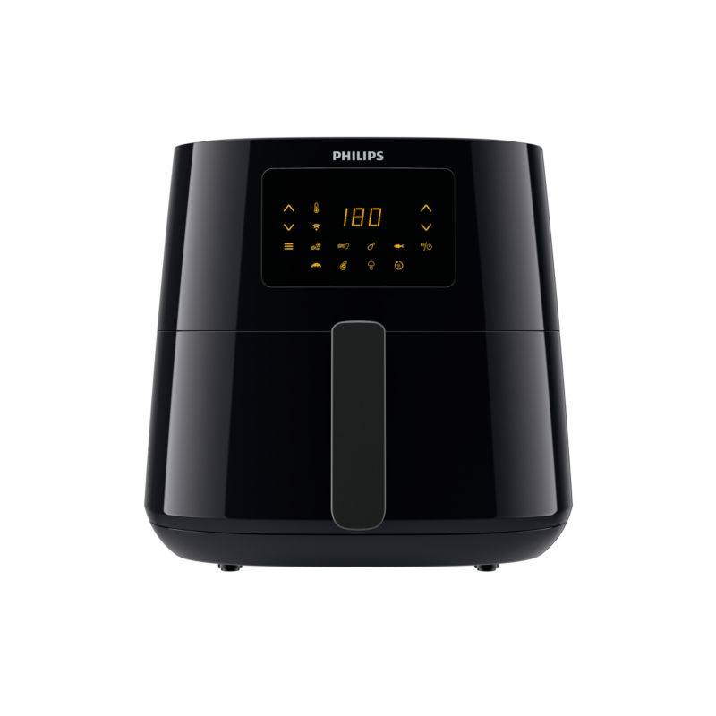
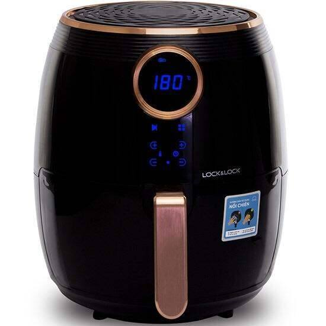

Tháng trước, bà chị họ mình nhắn tin hỏi: "Em ơi, nồi chiên không dầu mua Philips hay Lock&Lock? Chị thấy giá chênh nhau cả triệu mà không biết khác nhau chỗ nào." Mình tin đây cũng là câu hỏi của rất nhiều người. Hai hãng này gần như chia đôi thị trường nồi chiên ở Việt Nam. Một bên là hãng khai sinh ra nồi chiên không dầu, một bên là hãng đồ gia dụng Hàn Quốc giá mềm hơn hẳn.
Bài này mình đặt hai hãng lên bàn cân theo đúng 5 tiêu chí người mua quan tâm nhất, rồi gợi ý 4 model cụ thể đáng mua. Đọc xong, bạn sẽ biết mình thuộc team nào.
So sánh nhanh Philips vs Lock&Lock
Minh bạch: các nút "Xem giá" trong bài là link affiliate Shopee. Bạn mua giá không đổi, mình nhận một khoản hoa hồng nhỏ để duy trì blog.
- Giá: Philips đắt hơn rõ rệt, khởi điểm tầm 3.5 đến 4 triệu. Lock&Lock chỉ từ 1.5 đến 2.5 triệu cho dung tích tương đương.
- Dung tích: Lock&Lock thường cho dung tích lớn hơn ở cùng tầm giá. Philips tập trung vào dòng 4 đến 6L.
- Độ đều nhiệt: Philips nhỉnh hơn nhờ công nghệ Rapid Air đời đầu, nướng ít phải lật trở hơn.
- Hoàn thiện: cả hai đều tốt. Philips chắc tay hơn một chút, Lock&Lock cũng không hề ọp ẹp.
- Bảo hành: cả hai đều bảo hành chính hãng 12 đến 24 tháng tùy model, linh kiện thay thế dễ tìm.
Nói ngắn gọn: Philips hơn ở chất lượng nướng, Lock&Lock hơn ở giá và dung tích. Chi tiết từng tiêu chí ở dưới.
So sánh chi tiết theo 5 tiêu chí
1. Giá bán: khác biệt lớn nhất
Đây là lý do chính khiến người ta phân vân. Cùng dung tích tầm 5L, Philips thường đắt gấp rưỡi, có khi gấp đôi Lock&Lock. Với số tiền mua một chiếc Philips 4.1L, bạn mua được hẳn chiếc Lock&Lock 5.2L còn dư tiền mua thêm giấy nến dùng cả năm.
Câu hỏi đặt ra: khoản chênh lệch đó có đáng không? Câu trả lời nằm ở 4 tiêu chí dưới. Nếu bạn nướng mỗi ngày và ghét phải canh lật trở, Philips đáng tiền. Nếu nhu cầu chỉ là chiên lại đồ ăn, nướng thịt đơn giản vài bữa một tuần, Lock&Lock tiết kiệm hơn nhiều.
2. Dung tích
Lock&Lock thắng ở tiêu chí này. Hãng này rất chịu khó làm nồi to: 5.2L, 5.5L giá chỉ tầm 2 triệu. Philips cùng tầm giá thì loanh quanh 4.1L. Nhà 4 đến 5 người, hay nướng gà nguyên con, thì dung tích lớn là lợi thế thật sự, mỗi mẻ nướng được nhiều hơn, đỡ phải chia mẻ.
Tuy nhiên, nồi to cũng có mặt trái: chiếm diện tích bếp, làm nóng lâu hơn vài phút. Bếp nhà bạn nào chật thì cân nhắc kỹ trước khi ham nồi to.
3. Độ đều nhiệt khi nướng
Đây là sân nhà của Philips. Hãng này phát minh ra nồi chiên không dầu nên công nghệ đối lưu khí nóng Rapid Air của họ vẫn là chuẩn mực. Thực tế dùng, mình nướng đùi gà bằng Philips gần như không cần lật mặt mà hai bên vẫn chín đều, da giòn. Lock&Lock nướng cũng ngon, nhưng với món dày như đùi gà, sườn miếng to, bạn nên lật một lần giữa chừng cho chắc.
Khác biệt này nghe thì nhỏ, nhưng dùng hàng ngày mới thấy giá trị. Mỗi lần đỡ phải mở nồi ra lật trở là đỡ mất nhiệt, đỡ mất công canh giờ.
4. Độ bền và độ hoàn thiện
Cả hai hãng đều làm tốt ở khoản này, không có chuyện hàng rẻ ọp ẹp. Philips cho cảm giác chắc tay hơn: khay nồi nặng, ray trượt mượt, núm vặn hoặc phím bấm có độ nảy tốt. Lock&Lock cũng hoàn thiện ổn, vỏ nhựa dày dặn, nhưng so kỹ thì vẫn kém Philips một bậc về cảm giác cầm nắm.
Về lớp chống dính lòng nồi, cả hai đều dùng loại tốt nếu bạn mua hàng chính hãng. Điểm quyết định độ bền thực tế vẫn là cách dùng: lót giấy nến, không dội nước lạnh vào lòng nồi đang nóng, vệ sinh thanh nhiệt định kỳ. Làm đúng thì nồi hãng nào cũng bền 3 đến 5 năm.
5. Bảo hành và linh kiện thay thế
Philips bảo hành chính hãng thường 24 tháng, Lock&Lock thường 12 tháng tùy model và nơi bán. Cả hai đều có hệ thống bảo hành rộng ở Việt Nam, linh kiện như khay nướng, thanh nhiệt đều có thể đặt mua khi cần. Ở tiêu chí này, hai hãng coi như ngang nhau, bạn mua ở gian hàng chính hãng (Shopee Mall hoặc điện máy lớn) là yên tâm.
4 model đáng mua nhất 2026
| # | Model | Dung tích | Giá tham khảo | Điểm nổi bật |
|---|---|---|---|---|
| 1 | Philips HD9252/90 | 4.1L | ~3.800.000đ | Nướng đều nhất phân khúc |
| 2 | Lock&Lock EJF357 | 5.2L | ~2.100.000đ | To, rẻ, hoàn thiện tốt |
| 3 | Philips HD9280/90 | ~6.2L | ~5.500.000đ | Dung tích lớn, có app |
| 4 | Lock&Lock EJF376BLK | ~5L | ~2.600.000đ | Đẹp hơn EJF357, điều khiển điện tử |
1. Philips HD9252/90 (4.1L)

Giá tham khảo: khoảng 3.800.000đ (giá thay đổi theo đợt sale)
Con này mình đã review kỹ trong bài top 5 nồi chiên, ở đây nói ngắn gọn: đây là chiếc nồi chiên "chuẩn mực" để so sánh với mọi hãng khác. Nướng đều nhất, lòng nồi chống dính tốt nhất, máy chạy êm. Nhược điểm duy nhất vẫn là giá cao và dung tích 4.1L hơi chật nếu nhà bạn hay nướng gà nguyên con to. Nếu ngân sách cho phép và nhà 2 đến 4 người, đây là lựa chọn mình gợi ý đầu tiên.
- Nướng đều nhất, ít phải lật trở
- Hoàn thiện và chống dính hàng đầu
- Bảo hành chính hãng 2 năm
- Giá cao gần gấp đôi Lock&Lock cùng phân khúc
- 4.1L hơi chật với gia đình đông người
Hợp với ai: người đã xác định dùng nồi chiên hàng ngày, muốn nướng ngon nhất ít phải canh.
Xem giá tốt nhất trên Shopee →2. Lock&Lock EJF357 (5.2L)

Giá tham khảo: khoảng 2.100.000đ (giá thay đổi theo đợt sale)
Nếu tính theo công thức "ngon trên giá tiền", đây là chiếc nồi chiên vô địch. 2.1 triệu cho dung tích 5.2L, nướng vừa con gà 1.5kg không cần chia mẻ. Hoàn thiện của Lock&Lock ở mức tốt, núm vặn cơ bền, người lớn tuổi dùng cũng dễ. Điểm trừ là nướng không đều bằng Philips, món dày nên lật một lần giữa chừng. Mình cũng đã review kỹ mẫu này trong bài top 5.
- Dung tích 5.2L, giá chỉ tầm 2.1 triệu
- Hoàn thiện tốt, dùng bền
- Núm cơ đơn giản, dễ dùng
- Món dày cần lật mặt một lần
- Máy hơi ồn hơn Philips một chút
Hợp với ai: đa số gia đình Việt: cần nồi to, giá hợp lý, dùng bền.
Xem giá tốt nhất trên Shopee →3. Philips HD9280/90 (khoảng 6.2L)

Giá tham khảo: khoảng 5.500.000đ (giá thay đổi theo đợt sale)
Đây là dòng cao cấp của Philips, dung tích khoảng 6.2L, to hơn hẳn HD9252. Điểm ăn tiền nhất là kết nối wifi, chỉnh nhiệt độ và hẹn giờ ngay trên điện thoại, có sẵn nhiều công thức nấu trong app. Nướng thì vẫn chuẩn Philips: đều, giòn, ít phải canh. Rõ ràng đây không phải lựa chọn cho số đông vì giá 5.5 triệu không hề rẻ, nhưng nếu nhà bạn đông người và thích đồ công nghệ, con này đáng để nhắm tới.
- Dung tích lớn khoảng 6.2L, hợp nhà đông người
- Điều khiển qua app, nhiều công thức sẵn
- Chất lượng nướng chuẩn Philips
- Giá cao, gấp đôi Lock&Lock cùng dung tích
- Kích thước lớn, tốn diện tích bếp
Hợp với ai: nhà đông người, thích công nghệ, ngân sách thoải mái.
Xem giá tốt nhất trên Shopee →4. Lock&Lock EJF376BLK (khoảng 5L)

Giá tham khảo: khoảng 2.600.000đ (giá thay đổi theo đợt sale)
Mẫu mới của Lock&Lock, màu đen nhìn hiện đại hơn hẳn EJF357. Dung tích tầm 5L, đủ dùng cho gia đình 4 đến 5 người. Giá 2.6 triệu, cao hơn EJF357 khoảng 500 nghìn để đổi lấy thiết kế đẹp hơn và bảng điều khiển điện tử thay vì núm cơ. Nếu bạn thích Lock&Lock nhưng muốn chiếc nồi nhìn "xịn" hơn để trong bếp hiện đại, đây là lựa chọn hợp lý.
- Thiết kế đen hiện đại, đẹp hơn EJF357
- Dung tích tầm 5L, giá vẫn mềm
- Điều khiển điện tử, nhiều chế độ sẵn
- Đắt hơn EJF357 khoảng 500 nghìn
- Độ đều nhiệt vẫn thua Philips
Hợp với ai: người thích Lock&Lock nhưng muốn mẫu đẹp và hiện đại hơn.
Xem giá tốt nhất trên Shopee →Cách mình chấm điểm (công khai)
| Tiêu chí | Trọng số |
|---|---|
| Độ đều nhiệt khi nướng | 35% |
| Dung tích & kích thước | 25% |
| Độ bền & chống dính | 20% |
| Giá & bảo hành | 20% |
Điểm mỗi sản phẩm là trung bình có trọng số theo các tiêu chí trên, dựa trên đánh giá thật của người mua và thông số hãng công bố.
Kết luận: nên mua hãng nào?
- Ngân sách dưới 2.5 triệu, cần nồi to: Lock&Lock EJF357. Không có đối thủ ở tầm giá này.
- Muốn nướng ngon nhất, ít phải canh: Philips HD9252/90. Đắt nhưng xứng đáng nếu bạn dùng hàng ngày.
- Nhà đông người, thích công nghệ: Philips HD9280/90. Dung tích lớn, điều khiển qua điện thoại.
- Thích Lock&Lock nhưng muốn mẫu đẹp hơn: Lock&Lock EJF376BLK. Tốn thêm 500 nghìn cho thiết kế và điều khiển điện tử.
Nói thật lòng: với đa số gia đình Việt, Lock&Lock EJF357 là đáp án an toàn nhất. Còn nếu bạn đã xác định dùng nồi chiên như vật bất ly thân trong bếp, Philips sẽ không làm bạn thất vọng.
Câu hỏi thường gặp
Nồi chiên Philips có đáng giá gấp đôi Lock&Lock không?
Tùy cách bạn dùng. Nướng mỗi ngày, ghét lật trở, thích đồ bền dùng 5 năm thì đáng. Chỉ chiên lại đồ ăn, nướng thịt đơn giản vài bữa một tuần thì Lock&Lock tiết kiệm hơn nhiều mà vẫn ngon.
Lock&Lock có phải hàng Trung Quốc đội lốt Hàn Quốc không?
Lock&Lock là thương hiệu Hàn Quốc thật. Như hầu hết đồ gia dụng hiện nay, sản phẩm có thể được sản xuất tại Việt Nam, Trung Quốc hoặc Hàn Quốc tùy lô hàng, nhưng tiêu chuẩn chất lượng và chính sách bảo hành đều theo hãng. Mua ở gian hàng chính hãng là yên tâm.
Nên mua nồi chiên ở đâu chính hãng?
Ưu tiên gian hàng chính hãng trên Shopee Mall (Philips Official, Lock&Lock Official) hoặc các chuỗi điện máy lớn. Tránh mua ở shop lạ giá rẻ bất thường, nguy cơ hàng nhái, hàng tân trang rất cao với mặt hàng này.